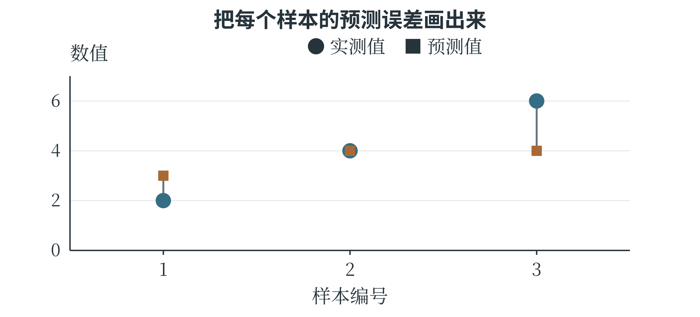

7.3 Matplotlib
图、绘图区和坐标轴
Matplotlib 是常用的 Python 绘图库。Figure 表示整张图，Axes 表示其中一个绘图区，绘图区内部再包含横轴、纵轴、曲线、点和图例等对象。常见写法 fig, ax = plt.subplots() 同时创建一张图和一个绘图区，再通过 ax 指定画什么、怎样标注。
import matplotlib.pyplot as plt
fig, ax = plt.subplots(figsize=(6, 4))
ax.scatter([4, 6, 8], [1, 2, 3], color="#376d84")
ax.set_xlabel("Length / cm")
ax.set_ylabel("Width / cm")
ax.set_title("Leaf measurements")
fig.tight_layout()
fig.savefig("leaf_scatter.png", dpi=160)
plt.show()
scatter 画散点，两个列表分别给出每个点的横坐标和纵坐标；同一位置的数据配成一个点。figsize 用英寸指定图的物理大小，savefig 保存文件，dpi 影响输出像素密度；show 在支持图形显示的环境中展示图像。图中使用英文标签是为了让示例在没有中文字体的环境中也能显示，含义分别为叶长、叶宽和叶片测量。需要中文标签时，应选用已安装且包含中文字形的字体。tight_layout 尝试安排边距，减少标签被挤出图外的情况，保存后仍应检查实际图片。文件保存到程序当前工作目录，并不一定与编辑器打开的源文件在同一处。保存时给出明确的输出路径，便于找到文件。
根据关系选择图形
折线图适合具有先后顺序的数据。例如，连续四天两台设备完成的处理数量可以画成两条线；散点图则通常不把每个点依次连起来，因为行顺序未必有意义。条形图比较不同类别的数量，饼图显示互不重叠的部分在同一整体中的占比。图形选错，即使代码没有报错，也可能让读者误解数据。
fig, ax = plt.subplots(figsize=(6, 4))
days = [1, 2, 3, 4]
ax.plot(days, [20, 35, 30, 50], marker="o",
color="#376d84", label="Device A")
ax.plot(days, [18, 24, 36, 42], marker="s",
linestyle="--", color="#73958c", label="Device B")
ax.set_xlabel("Day")
ax.set_ylabel("Processed images")
ax.set_xticks(days)
ax.set_ylim(0, 60)
ax.legend()
fig.tight_layout()
fig.savefig("device_lines.png", dpi=160)
plt.show()
label 为每个数据系列命名，legend 显示图例。颜色、圆形与方形标记、实线与虚线共同区分两条曲线，灰度打印时也能辨认。set_xticks 将横轴刻度放在四个整数日期上，set_ylim 指定纵轴范围。范围过窄可能夸大波动，过宽又会掩盖细节，需要结合要表达的问题选择，并让单位和刻度清楚可见。
下面在同一张图中放置条形图和饼图，两者使用同一组类别数量。
names = ["Plants", "Animals", "Objects"]
counts = [40, 35, 25]
colors = ["#376d84", "#73958c", "#b5a98f"]
fig, axes = plt.subplots(1, 2, figsize=(9, 4))
axes[0].bar(names, counts, color=colors)
axes[0].set_ylabel("Image count")
axes[0].set_ylim(0, 50)
axes[1].pie(counts, labels=names, colors=colors,
autopct="%.0f%%", startangle=90)
axes[1].set_aspect("equal")
fig.tight_layout()
fig.savefig("category_charts.png", dpi=160)
plt.show()
subplots(1, 2) 创建一行两个绘图区，axes[0] 和 axes[1] 分别访问它们。bar 用条高表示数量，pie 将数量转成整体中的比例；autopct 控制百分数标签格式，equal 使两个方向显示尺度相同，保持饼图为圆形。三个数量相加为 100，所以百分比恰好与数量数字相同，换一组总量后就不能再这样读。
图形画出来以后，还需要读图。对同一批数据，先用散点图观察关系，再用折线图检查时间变化，再按类别汇总，可能发现不同问题。保存之前应核对每个轴代表什么、数据是否按应有顺序排列、图例是否对应曲线，以及缺失记录有没有被悄悄当成零。
画出模型的误差
第三章计算过实际值 2、4、6 与预测值 3、4、4 的误差。把这组数据画出来，可以更直观地看见模型在哪个样本上偏高、在哪个样本上偏低。横轴只表示样本编号，实测值和预测值使用不同标记，同一样本的两点间再画一条细线。
sample_ids = np.array([1, 2, 3])
observed = np.array([2, 4, 6])
predicted = np.array([3, 4, 4])
fig, ax = plt.subplots(figsize=(6, 4))
ax.scatter(sample_ids, observed,
marker="o", label="Observed")
ax.scatter(sample_ids, predicted,
marker="x", label="Predicted")
ax.vlines(sample_ids, observed, predicted,
color="gray", linestyle="--")
ax.set_xticks(sample_ids)
ax.set_xlabel("Sample")
ax.set_ylabel("Value")
ax.set_ylim(0, 7)
ax.legend()
fig.tight_layout()
fig.savefig("prediction_errors.png", dpi=160)
plt.show()
vlines 在给定横坐标处画竖直线段，起点和终点来自实测值与预测值。第二个样本的两值相同，线段长度为零；第三个样本的线段最长，绝对误差最大。图 7-4 使用同样的数据，横坐标上的距离并不表示样本在现实中相隔多远，因此也没有必要把三个实测点连成一条连续变化的曲线。

误差图还可以帮助提出下一步问题。如果多数预测都偏低，也许截距需要调整；如果误差随着输入增大而增大，也许直线没有抓住所需的曲线关系。不过，三个点只能演示读图的方法。实际分析中，需要更多记录，并把发现的问题带回训练与验证流程中检查。